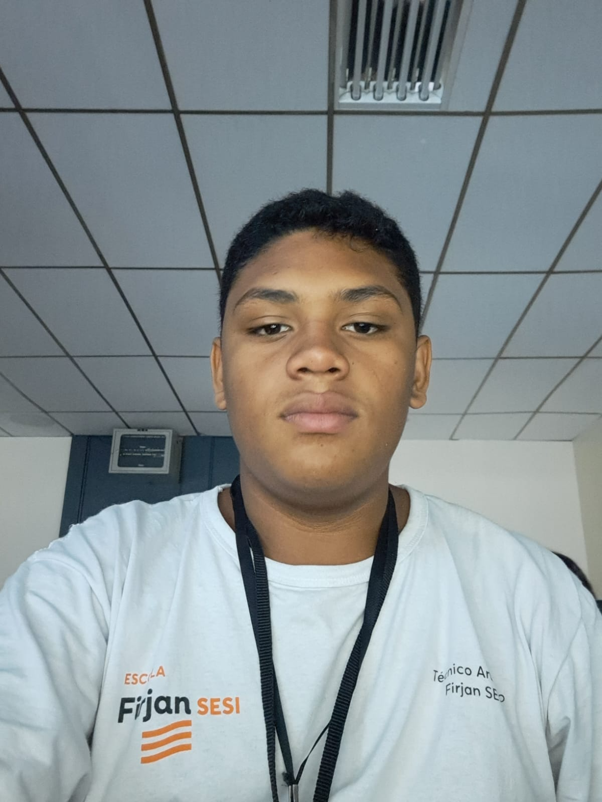

Saiba 3 profissões da área de TI
por Gabriel Andrade
Tecnologia > TI
Criado em 12/Junho/2023
Quem sou eu?
Eu sou o Gabriel Andrade, cursando TI na Firjan Senai e 1º ano do ensino médio na Firjan Sesi. Sou dono da empresa Audiovisual & TI G.A., responsável pelo site que está sendo lido nesse momento. Essa empresa tem o intuito de mostrar o mundo da tecnologia especiaficamente o Audiovisual e o TI, que são áreas que me interesso muito e gosto muito de trabalhar com isso. Trabalho como voluntário na igreja com AudioVisual. Espero que tenham gostado do site e informações abordadas.
